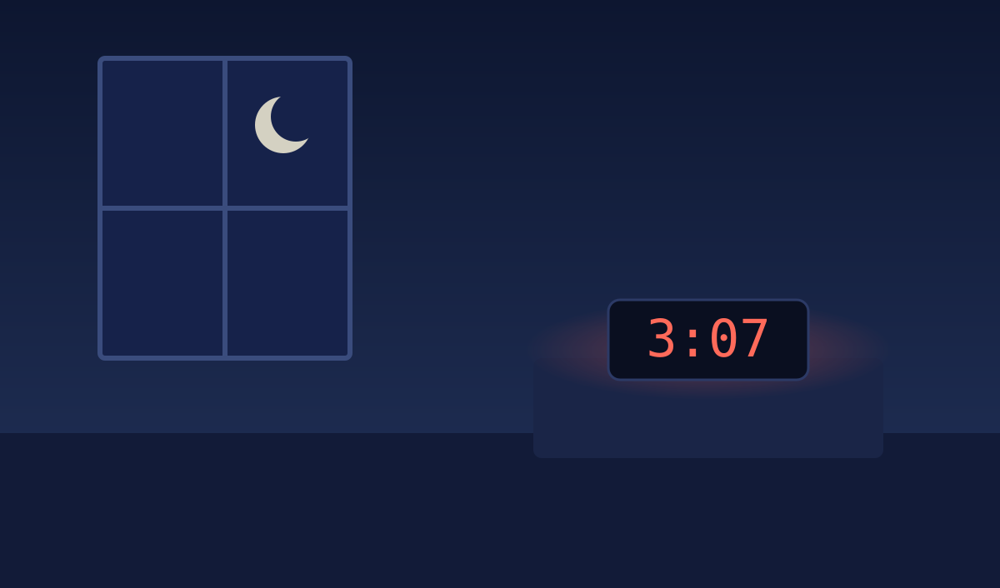

Disclosure: We may receive compensation when you click links on this page and buy.
A short printable guide treats it as a stack of small causes. Here's how it works, and what it costs.

You fall asleep without much trouble. Then, a few hours later, you're awake. The room is dark, the house is quiet, and the clock says it's somewhere around 3.
It's tempting to treat that as a single problem with a single answer. Try this tea. Cut out that screen. Take this supplement.
A guide called The 3 AM Wake-Up Fix takes a different view. It frames early-morning waking as a stack of small causes that add up:
If several of those are stacked up, fixing just one of them may not be enough. So the guide works on the whole stack.
The guide is built around two moments.
Before bed, there's a 15-minute setup for tonight. It's one page with eight checkboxes, plus an Evening Timing Planner for caffeine, meal, fluid, and alcohol cutoffs. The aim is to make waking less likely.
At 3 AM, there's a printable card for your nightstand. It walks you through eight steps in the moment, so you're not lying there checking the clock and hoping. The guide also explains why the second half of the night is lighter, and why not checking the time matters.
See The 3 AM Wake-Up Fix ($7)It's a PDF in 8 short steps that takes about 30 minutes to read. It includes:
It isn't a course, and it isn't a supplement plan. There's no app and no subscription. It's a printable system you run for seven nights, with a tracker so you can see which changes make a difference for you.
One-time price of $7. You get the PDF right away. An optional $17 "3 AM Toolkit" is offered at checkout, and you can skip it. No subscription. If the guide isn't worth $7 to you, reply to your receipt email for a refund and keep the guide. Sold by Sleep Smarter, not by this site.
A note on safety. This guide is not medical advice. If you snore heavily, gasp or stop breathing in your sleep, or have ongoing insomnia, talk to a doctor. The guide includes a list of when to see one.
See The 3 AM Wake-Up Fix ($7)